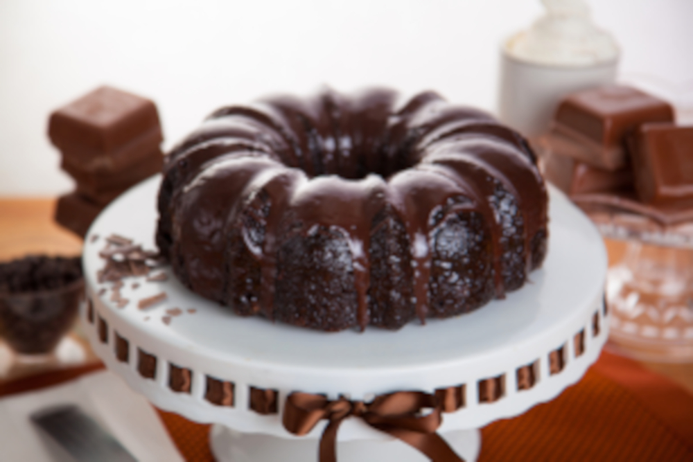
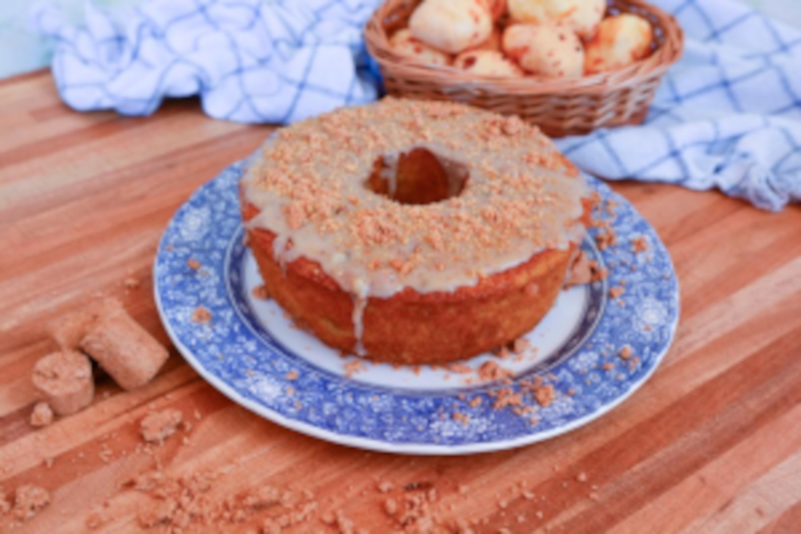

Bolo de chocolate fofinho 😀

Vamos começar?!
Massa do bolo 🎂:
- 3 Ovos
- 1 Xícara de açúcar (cristal ou refinado).
- 1/2 xícara de óleo (milho ou girassol)
- 1 xícara de leite morno
- 1 xícara de chocolate em pó (ou cacau 50% se quiser mais intenso)
- 2 xícaras de farinha de trigo peneirada
- 1 colher (sopa) de fermento em pó
Cobertura do bolo 🍫:
- 1/2 caixinha de creme de leite
- 3 colheres (sopa) de chocolate em pó
- 1 colher (sopa) de manteiga
- 2 colheres (sopa) de açúcar
Modo de preparo 👩🍳:
- Pré-aqueça o forno a 180ºC e unte uma forma média com manteiga e farinha ou chocolate em pó.
- No liquidificador (ou na mão mesmo), bata os ovos, o açúcar e o óleo por 2 minutinhos até ficar homogêneo.
- Adicione o leite e o chocolate em pó e bata mais um pouco.
- Vá adicionando a farinha aos poucos, misturando até incorporar tudo.
- Por último, coloque o fermento e misture delicadamente.
- Despeje a massa na forma e leve ao forno por cerca de 35 a 40 minutos ou até o palito sair limpo.
- Enquanto assa, prepare a cobertura: leve tudo ao fogo baixo e mexa até dar uma leve engrossada.
- Assim que o bolo sair do forno, despeje a cobertura ainda quente por cima dele. Pode fazer uns furinhos com o garfo pra penetrar bem!
💡 Dica da Vó Bia:
- Se quiser ele ainda mais molhadinho, pode regar com um pouco de leite com achocolatado antes de colocar a cobertura.
bolo de paçoca fofinho 😀

Vamos começar?!
Massa do bolo 🎂:
- 3 ovos
- 1 xícara de açúcar
- 1/2 xícara de óleo
- 1 xícara de leite (pode ser morno para deixar mais macio)
- 1 e 1/2 xícara de farinha de trigo
- 1/2 xícara de amido de milho (opcional, mas deixa mais leve)
- 6 paçocas tipo rolha esfareladas
- 1 colher (sopa) de fermento em pó
Cobertura 🥜:
- 1/2 caixinha de creme de leite
- 1 colher (sopa) de manteiga
- 2 paçocas esfareladas
- 3 colheres (sopa) de leite condensado
Modo de preparo 👩🍳:
- Pré-aqueça o forno a 180°C. Unte uma forma média com manteiga e farinha (ou farinha de amendoim).
- Em uma tigela ou liquidificador, bata os ovos, o açúcar e o óleo até formar um creme claro.
- Adicione o leite e bata mais um pouco.
- Misture a farinha e o amido aos poucos. Depois, incorpore a paçoca esfarelada.
- Por último, coloque o fermento e misture com cuidado.
- Despeje na forma e asse por cerca de 35 a 40 minutos, até o palito sair limpo.
- Enquanto assa, prepare a cobertura: leve tudo ao fogo baixo mexendo até engrossar levemente.
- Com o bolo ainda morno, despeje a cobertura e finalize com paçoca esfarelada por cima.
💡 Dica da Vó Bia:
- Se quiser uma versão ainda mais festiva, coloque amendoim triturado ou um toque de canela na massa. Fica top!
Página inicial